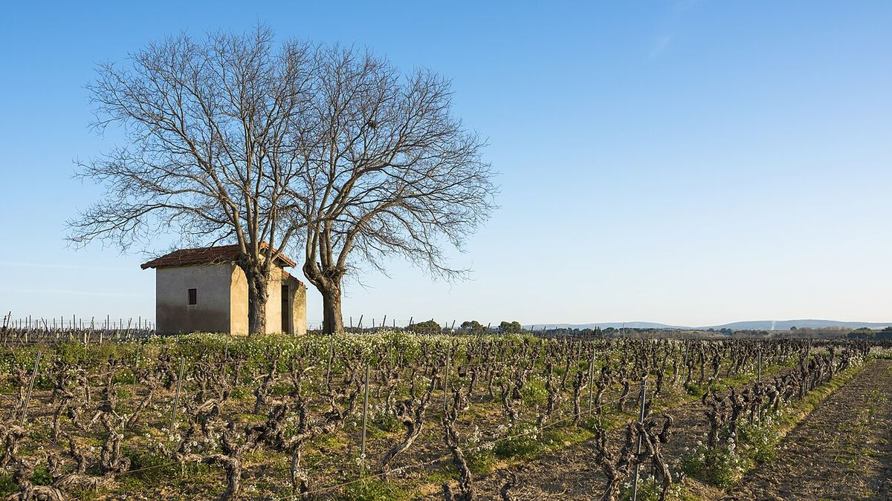

Francia
La Francia è uno dei paesi di riferimento del vino, culla del concetto di terroir e di un sistema di denominazioni d'origine che ha fatto da modello a molti altri. Da Bordeaux alla Borgogna, dalla Champagne al Rodano, le sue regioni hanno plasmato stili imitati in tutto il mondo.

Storia
La viticoltura giunse nell'attuale territorio francese con i Greci di Focea, che fondarono Massalia, l'odierna Marsiglia, intorno al 600 a.C. Con la conquista romana la vite si diffuse nella Gallia Narbonense e risalì poi le valli del Rodano, della Garonna, della Loira e della Mosella, fino a raggiungere regioni settentrionali come la Borgogna e la Champagne. Nel Medioevo gli ordini monastici, in particolare i benedettini di Cluny e i cistercensi di Cîteaux, ebbero un ruolo decisivo in Borgogna. Il matrimonio di Eleonora d'Aquitania con Enrico Plantageneto, nel 1152, aprì il mercato inglese ai vini di Bordeaux, che per secoli furono esportati con il nome di claret.
Tra il Seicento e l'Ottocento si definirono molti degli stili attuali: ingegneri olandesi contribuirono a bonificare le paludi del Médoc, lo Champagne spumante si affermò e il commercio bordolese raggiunse un grande prestigio, testimoniato dalla classificazione del 1855. A partire dagli anni Sessanta dell'Ottocento la fillossera, un insetto giunto dall'America, devastò gran parte dei vigneti francesi; la soluzione definitiva fu innestare le varietà europee su portinnesti americani. Frodi e sovrapproduzione, all'origine di rivolte come quella del Midi nel 1907, portarono a una legislazione sull'origine culminata nella creazione, nel 1935, del comitato che sarebbe poi diventato l'INAO e nelle prime appellations d'origine contrôlée del 1936.
Clima e suoli
La Francia riunisce tre grandi influenze climatiche. L'ovest, con Bordeaux e la Loira atlantica, ha un clima oceanico mite e umido, con inverni miti e annate fortemente segnate dalla pioggia. L'est e il nord, con Borgogna, Champagne e Alsazia, hanno un clima continentale o semicontinentale, con inverni freddi, rischio di gelate primaverili ed estati calde. Il sud, con Provenza, Linguadoca-Rossiglione e valle meridionale del Rodano, è mediterraneo, soleggiato e secco, spesso spazzato da venti come il mistral o la tramontana.
La varietà geologica è altrettanto notevole: ghiaie sulla riva sinistra di Bordeaux, argille e calcari a Saint-Émilion, marne e calcari giurassici in Borgogna e a Chablis, gesso in Champagne, graniti nel Beaujolais e nel Rodano settentrionale, scisti in parte della Linguadoca e del Rossiglione e un mosaico di suoli molto diversi in Alsazia. Questa varietà è alla base del concetto di terroir, che riunisce suolo, clima, rilievo e sapere umano, e che struttura l'intero sistema francese delle denominazioni.
Il sistema delle denominazioni
La normativa francese si fonda sull'idea che l'origine geografica determini il carattere del vino. Ogni AOC delimita una zona e stabilisce i vitigni ammessi, le rese massime, il titolo alcolometrico minimo e diverse pratiche di coltivazione e vinificazione. Dalla riforma europea del 2009 la categoria superiore si chiama AOP (appellation d'origine protégée), anche se la tradizionale menzione AOC compare ancora in etichetta. Seguono le IGP (indication géographique protégée), eredi dei vecchi vins de pays, con regole più flessibili e la possibilità di indicare il vitigno, come nella vasta IGP Pays d'Oc; e infine la categoria Vin de France, che ha sostituito i vini da tavola e non richiede un'origine regionale.
Le denominazioni sono spesso organizzate su più livelli: regionali, come Bordeaux o Bourgogne; subregionali, come Haut-Médoc o Côte de Nuits-Villages; e comunali, come Pauillac, Margaux o Gevrey-Chambertin.
Classificazioni
Accanto alle denominazioni esistono classificazioni proprie di ciascuna regione. La più celebre è quella del 1855, redatta dai mediatori di Bordeaux in occasione dell'Esposizione universale di Parigi: ordinò in cinque categorie i rossi del Médoc, insieme allo Château Haut-Brion delle Graves, e classificò anche i vini dolci di Sauternes e Barsac, con lo Château d'Yquem unico premier cru supérieur. L'unica modifica rilevante è stata la promozione dello Château Mouton Rothschild a primo cru nel 1973. Bordeaux dispone inoltre della classificazione delle Graves, del 1953 e completata nel 1959, di quella di Saint-Émilion, creata nel 1955 e rivista periodicamente, e di quella dei Crus Bourgeois del Médoc.
In Borgogna la gerarchia non riguarda le proprietà ma le parcelle di vigneto, i climats: denominazioni regionali, comunali o villages, premiers crus e, al vertice, 33 grands crus, come Chambertin, Romanée-Conti, Clos de Vougeot, Corton o Montrachet. L'Alsazia conta 51 grands crus delimitati e in Champagne 17 comuni hanno la menzione grand cru, eredità dell'antica échelle des crus.
Regioni e stili
Bordeaux è il riferimento per i rossi da uvaggio a base di Cabernet Sauvignon e Merlot e per i vini dolci botritizzati di Sauternes. La Borgogna ha fatto del Pinot Nero e dello Chardonnay l'espressione di singole parcelle, mentre il Beaujolais è dedicato al Gamay. La Champagne ha reso celebre il metodo della seconda fermentazione in bottiglia, impiegato anche per i crémants di altre regioni. La valle della Loira offre Sauvignon Blanc, Chenin Blanc, Melon de Bourgogne e Cabernet Franc in stili molto diversi; il Rodano, rossi di Syrah a nord e uvaggi a base di Grenache a sud; l'Alsazia, bianchi varietali di Riesling, Gewürztraminer o Pinot Grigio; la Provenza, soprattutto rosati; e la Linguadoca-Rossiglione, la più vasta zona viticola del paese, rossi mediterranei e vins doux naturels.
Regioni e denominazioni
Bordeaux
Regione vitivinicola (AOC Bordeaux e Bordeaux Supérieur) · Bordeaux, nel dipartimento della Gironda, è una delle regioni vinicole più influenti al mondo. È celebre per i rossi da uvaggio a base di Cabernet Sauvignon e Merlot, per i bianchi secchi e per i vini dolci di Sauternes.
Médoc
Sottozona di Bordeaux (AOC Médoc, Haut-Médoc e denominazioni comunali) · Il Médoc è la penisola sulla riva sinistra della Gironda, a nord della città di Bordeaux. I suoi suoli ghiaiosi e i rossi dominati dal Cabernet Sauvignon costituiscono la maggior parte dei vini della classificazione del 1855.
Saint-Émilion
AOC (Saint-Émilion e Saint-Émilion Grand Cru) · Saint-Émilion, sulla riva destra della Dordogna, è una delle grandi denominazioni di Bordeaux, nota per i rossi dominati da Merlot e Cabernet Franc. Il suo borgo medievale e il suo paesaggio viticolo sono iscritti nel Patrimonio mondiale dell'UNESCO.
Pomerol
AOC · Pomerol è una piccola denominazione della riva destra di Bordeaux, vicino a Libourne, dedicata a rossi di Merlot con un apporto di Cabernet Franc. Non ha mai avuto una classificazione ufficiale, ma ospita alcuni dei vini più ricercati della regione.
Pessac-Léognan
AOC · Pessac-Léognan è la denominazione creata nel 1987 nella parte settentrionale delle Graves, alle porte della città di Bordeaux. Produce rossi e bianchi secchi e comprende tutte le proprietà della classificazione delle Graves, tra cui lo Château Haut-Brion.
Sauternes
AOC (vino dolce) · Sauternes, a sud delle Graves, è la denominazione dei grandi vini dolci di Bordeaux, prodotti con uve colpite dalla muffa nobile. Il suo vino più noto, lo Château d'Yquem, fu l'unico classificato premier cru supérieur nel 1855.
Borgogna
Regione vitivinicola · La Borgogna, nella Francia centro-orientale, è la regione del Pinot Nero e dello Chardonnay espressi attraverso parcelle di vigneto molto precise, i climats. La sua gerarchia di denominazioni culmina nei grands crus della Côte d'Or e di Chablis.
Chablis
AOC (Petit Chablis, Chablis, Chablis Premier Cru e Chablis Grand Cru) · Chablis, nel dipartimento dello Yonne, è il vigneto più settentrionale della Borgogna ed è dedicato esclusivamente allo Chardonnay. I suoi bianchi, di acidità vivace e carattere minerale, sono associati ai suoli di marna kimmeridgiana.
Côte de Nuits
Sottozona della Borgogna (Côte d'Or) · La Côte de Nuits è la metà settentrionale della Côte d'Or, tra Digione e Corgoloin. Dedicata quasi interamente al Pinot Nero, concentra la grande maggioranza dei grands crus rossi della Borgogna.
Côte de Beaune
Sottozona della Borgogna (Côte d'Or) · La Côte de Beaune è la metà meridionale della Côte d'Or, da Ladoix a Maranges. Produce alcuni dei bianchi di Chardonnay più apprezzati al mondo, come Montrachet, Meursault o Corton-Charlemagne, e rossi di Pinot Nero come Pommard e Volnay.
Beaujolais
Regione vitivinicola (AOC Beaujolais, Beaujolais-Villages e dieci crus) · Il Beaujolais, tra il Mâconnais e Lione, è la terra del Gamay. I suoi vini vanno dal Beaujolais Nouveau, messo in commercio poche settimane dopo la vendemmia, ai dieci crus del nord, su suoli granitici.
Champagne
AOC (vino spumante) · La Champagne, a nord-est di Parigi, è la regione che ha reso famosi nel mondo gli spumanti prodotti con rifermentazione in bottiglia. I suoi vini si basano su Chardonnay, Pinot Nero e Meunier, coltivati su un sottosuolo di gesso.
Loira
Regione vitivinicola · La valle della Loira riunisce una successione di vigneti lungo il fiume più lungo di Francia, dalla costa atlantica al centro del paese. È nota per la varietà dei suoi stili, con Melon de Bourgogne, Chenin Blanc, Sauvignon Blanc e Cabernet Franc come protagonisti.
Sancerre
AOC · Sancerre, sulla riva sinistra della Loira, nel dipartimento del Cher, è una delle denominazioni di riferimento per il Sauvignon Blanc. Produce anche rossi e rosati da Pinot Nero.
Rodano settentrionale
Sottozona della valle del Rodano · Il Rodano settentrionale è la stretta fascia di vigneti terrazzati che accompagna il fiume tra Vienne e Valence. È la terra del Syrah nella sua versione più classica, in denominazioni come Côte-Rôtie, Hermitage e Cornas, e del Viognier di Condrieu.
Châteauneuf-du-Pape
AOC · Châteauneuf-du-Pape, vicino ad Avignone, è la denominazione più celebre del Rodano meridionale. I suoi rossi, basati soprattutto sul Grenache, possono riunire fino a tredici vitigni, e le sue regole del 1923 hanno fatto da base al sistema francese delle denominazioni d'origine.
Alsazia
Regione vitivinicola (AOC Alsace, Alsace Grand Cru e Crémant d'Alsace) · L'Alsazia, tra i Vosgi e il Reno, è una regione di vini bianchi aromatici che, a differenza della maggior parte della Francia, si identificano per vitigno. Riesling, Gewürztraminer, Pinot Grigio e Moscato sono le sue uve più prestigiose.
Provenza
Regione vitivinicola · La Provenza, nel sud-est della Francia, tra il Rodano e la Costa Azzurra, è la regione francese più legata al vino rosato, che rappresenta la grande maggioranza della sua produzione. Conta anche denominazioni di rossi e bianchi di forte personalità, come Bandol e Cassis.
Linguadoca-Rossiglione
Regione vitivinicola · La Linguadoca-Rossiglione, lungo il Mediterraneo tra il Rodano e i Pirenei, è la più vasta zona viticola di Francia. Un tempo nota per i vini da tavola, oggi produce rossi mediterranei a denominazione, vini varietali dell'IGP Pays d'Oc, spumanti di Limoux e vins doux naturels.